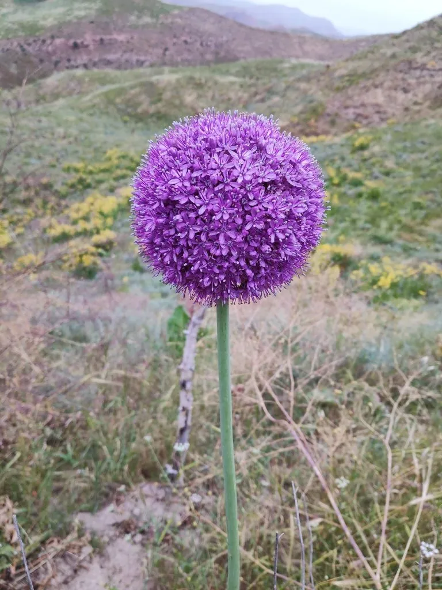

花卉与草本 · 植物界
大花葱 Allium giganteum

石蒜科葱属多年生球根花卉，花球硕大如紫色绒球，由上千朵小花组成，是花境中的明星植物，原产中亚。
- 分类
- 门被子植物门纲木兰纲目天门冬目科石蒜科属葱属
- 栖息环境
- 中亚干旱山地的草坡与石缝，喜凉爽、阳光充足、排水良好
- 地理分布
- 原产中亚、阿富汗与伊朗，现世界各地庭园栽培
- 保护级别
- 暂无评估
物种志
大花葱为石蒜科葱属多年生球根草本，株高 0.8–1.5 米，地下具球形鳞茎。叶片基生，带状，灰绿色。花葶粗壮直立，顶端生球形伞形花序，直径可达 15–20 厘米，由上千朵小花密集组成，花色紫红或淡紫，花期 5–6 月；果实为蒴果。
大花葱原产中亚、阿富汗和伊朗一带的干旱山地，喜凉爽、阳光充足和排水良好的环境，耐寒性强，夏季地上部分枯萎休眠。它的小花密集成球，远看像一个紫色大绒球，花葶高大挺拔，是花境中极具视觉冲击力的竖线条植物，也常作切花。大花葱与洋葱、大蒜同属葱属，叶片揉碎后有葱蒜气味；栽培以播种和分球繁殖为主。
形态与习性
- 株高0.8–1.5 米，花球直径 15–20 厘米
- 花期5–6 月，花球由上千朵小花组成
- 果期花后结蒴果
- 光照喜充足阳光
- 水分耐旱，忌积水
- 土壤疏松、排水良好的沙质壤土
- 繁殖播种、分球
- 主要用途花境、切花、岩石园
趣味知识
- 大花葱的花球直径可达 15–20 厘米，由上千朵小花密集组成。
- 它和洋葱、大蒜同属葱属，叶片揉碎后有葱蒜气味。
- 花葶高大挺拔，是花境中视觉效果突出的竖线条植物。
- 大花葱夏季地上部分枯萎休眠，鳞茎在土中越夏。